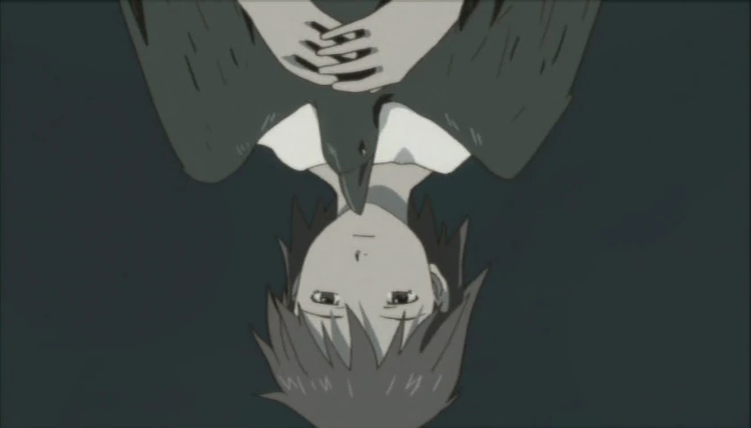

союз серокрылых / haibane renmei- аниме сериал про город где проживают ангелоподобные люди и простые люди вместе.
Девочка видит сон, в котором падает с большой высоты. Проснувшись, она обнаруживает себя в незнакомом доме, совершенно непомнящей ничего из своего прошлого, даже собственного имени. Её приветствуют другие обитательницы, живущие здесь уже давно. Все они — девочки примерно одного возраста с ней , но с небольшими серыми крыльями за спиной и с нимбами над головами. От них она узнаёт, что появилась на свет, как и все присутствующие, из кокона, который образовался в одной из комнат дома. Поскольку никто из вновь появившихся не помнит своего прошлого, имена им даются по содержанию сна, виденного во время пребывания в коконе. Героиня получает имя Ракка что означает падающая. Через некоторое время у неё прорезаются крылья, она получает нимб и начинает свою жизнь в этом мире, став одной из альянса серокрылых. сериал описывает жизнь Ракки в мире, куда она попала — городе, окружённом высокой стеной, за пределы которой запрещено выходить, в Старом доме, где она появилась и где живут её новые подруги. Ракка общается с другими серокрылыми и с людьми, живущими в городе, помогает им, работает, подчиняется принятым правилам и ограничениям. Она пытается понять, кто она, почему она здесь находится, как устроен мир вокруг неё и что будет дальше.